5 도어벨
5.1 스마트 도어벨 G4
5.1.1 설치 영상
5.1.2 제품 소개
스마트 비디오 도어벨 G4는 실외에 설치하는 “도어벨 메인 모듈”과 실내에 설치하는 “차임 리피터”로 구성됩니다. 외부에서 초인종을 누르거나 사람이 감지되는 경우 영상을 녹화하고 스마트 폰으로 푸시 메시지를 보낼 수 있습니다. 또한, 장치 자체에서 로컬 방식으로 작동하는 AI 안면 인식 알고리즘을 통해 방문자를 구별하여 인식하고 표시할 수 있습니다. 200만 화소의 162도 광각 렌즈를 통해 넓은 영역을 선명하게 확인할 수 있으며, 940nm 적외선 필라이트를 장착하여 야간에도 외부 영상을 쉽게 확인할 수 있습니다. 보다 강력한 보안을 위해 사용자의 음성 변조 기능을 지원하며, 탬퍼 알람 기능을 통해 언제 어디서나 앱을 통해 외부 상황을 확인하고 도어벨을 작동 시킬 수 있습니다. 도어벨 메인 모듈은 초저전력 기술을 기반으로 설계되어 AA배터리 6개로 사용할 수 있으며, 8-24 AC 또는 DC 전원 공급 장치를 통해 사용할 수도 있습니다. 또한 제품 패키지에 포함된 20’ 브라켓을 통해 렌즈의 방향을 조절할 수 있으며, 차임 리피터에 MicroSD카드를 추가하여 로컬 영역에 영상을 저장할 수 있습니다.
제품구성
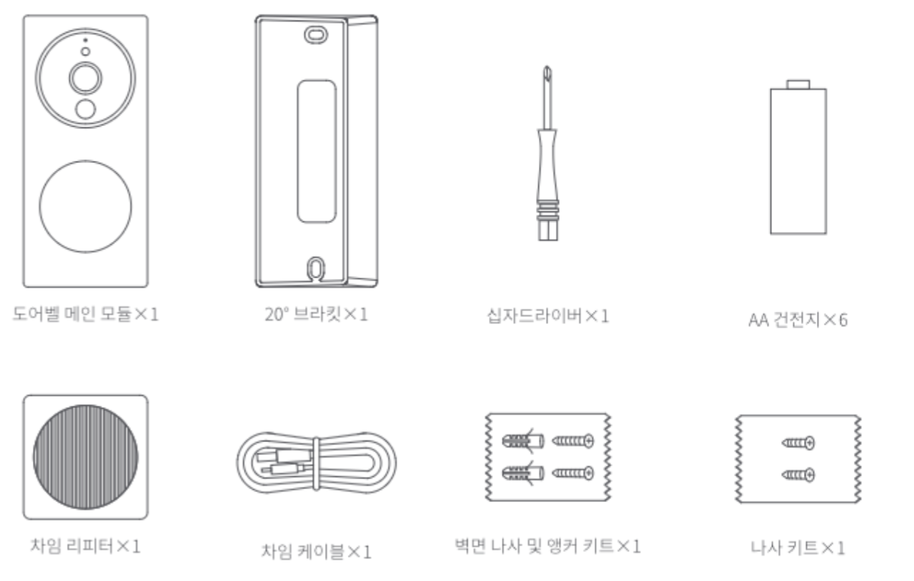
도어벨 메인 모듈
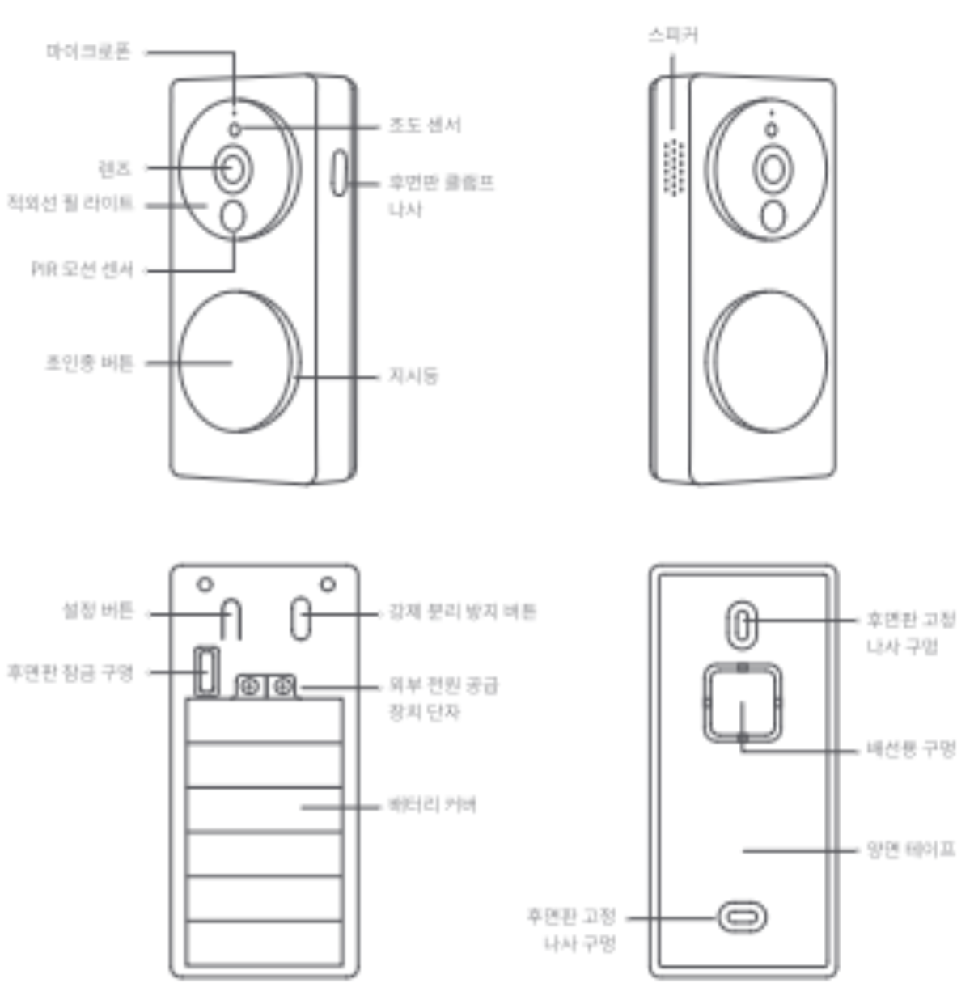
버튼 기능 설명
초인종 버튼: 초인종 버튼을 누르면 차임 리피터가 울립니다.
설정 버튼: 버튼을 10초 동안 길게 눌러 기본 설정 복원
강제 분리 방지 버튼: 버튼이 눌려있는 상태가 정상이며, 눌림이 풀렸을 때 정보 메시지를 보냅니다. (강제 분리 방지 기능은 기본적으로 꺼져 있으며 앱에서 활성화한 후 작동합니다.)
차임 리피터
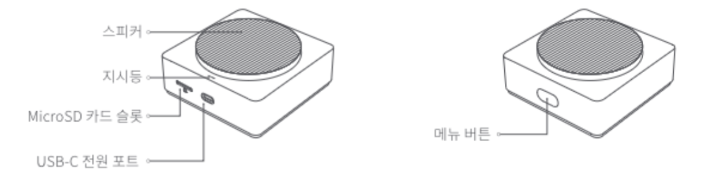
5.1.3 제품 사양
5.1.3.1 도어벨 기본 모듈

5.1.3.2 차임 리피터
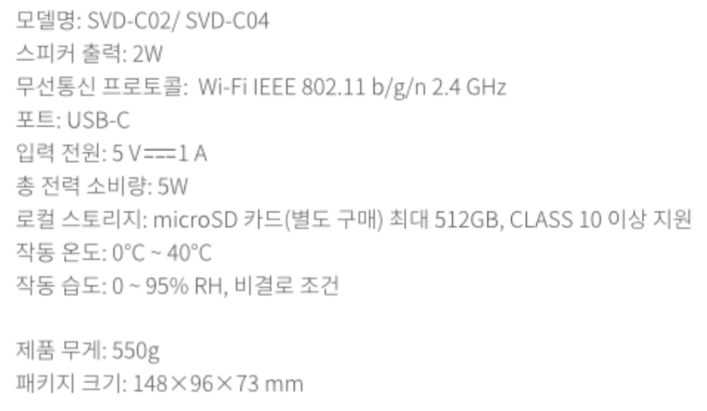
5.1.4 지시등 상태 설명
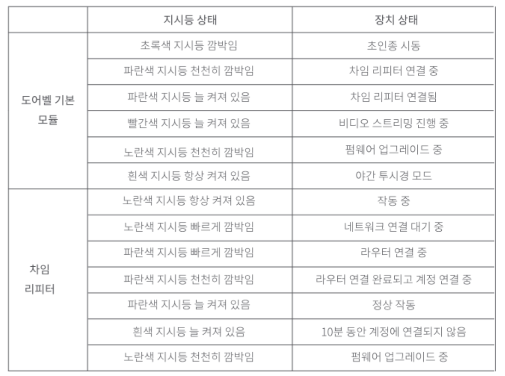
5.1.5 설치 방법
올바른 사용을 위해서 제품 설치 전에 다음 내용을 잘 읽고 보십시오.
5.1.5.1 스마트 비디오 도어벨 G4를 사용하기 위해 Aqara Home앱을 다운로드한 후 계정을 생성해 주세요. Apple Home앱을 통해서만 장치를 작동시킬 수도 있지만 로컬 안면 인식 기능을 기반으로 인식한 방문자 정보 기록, 사용자 지정 벨소리 설정 등 다양한 고유 기능을 사용할 수 없습니다.
5.1.5.2 배터리를 전원으로 사용하는 경우 도어벨이 작동하는 실제 횟수가 배터리 수명에 직접적으로 영향을 줍니다. 하루에 도어벨을 30회 정도 사용하는 경우를 기준으로 배터리 수명은 약 3~4개월 정도입니다. 도어벨을 절전 모드로 전환하는 경우 배터리 수명이 연장되지만, 해당 경우에는 사람이 PIR 센서에 감지되는 경우에도 알람이나 녹화 등 도어벨의 기능을 작동시키지 않습니다. 절전 모드에서는 사람이 초인종 버튼을 직접 누르거나, 사용자가 탬퍼 알람 기능을 사용하거나, 원격에서 비디오를 켜는 경우에만 작동시킬 수 있습니다.
5.1.5.3 사용자의 설치 환경에 맞추어 도어벨의 설치 위치와 전원 공급 방법을 선택해 주세요. 제품을 설치하기 전에 장치를 네트워크에 연결한 후에 배터리나 외부 전원을 연결해야 합니다. 설치하기 전에 반드시 사용 설명서를 자세히 읽고 안내 사항에 따라 제품을 설치해 주세요.
5.1.6 제품 설치 방법
5.1.6.1 설치 위치 선택
아래 그림과 같이 도어벨 기본 모듈은 실외 벽이나 문에 설치하고, 높이는 1.4~1.5m 내외로 설치하는 것을 추천합니다. 금속 소잭의 문인 경우에는 문 바로 옆 벽 부분에 설치하는 것을 권장합니다. 차임 리피터는 도어벨 메인 모듈과의 원활한 네트워크를 위해 출입문 벽면으로 부터 5m 이내의 수평 거리에 설치하는 것이 가장 좋습니다. 도어벨 메인 모듈과 차임 리피터는 직선 거리를 기준으로 20m이내에 설치하는 것을 권장합니다.
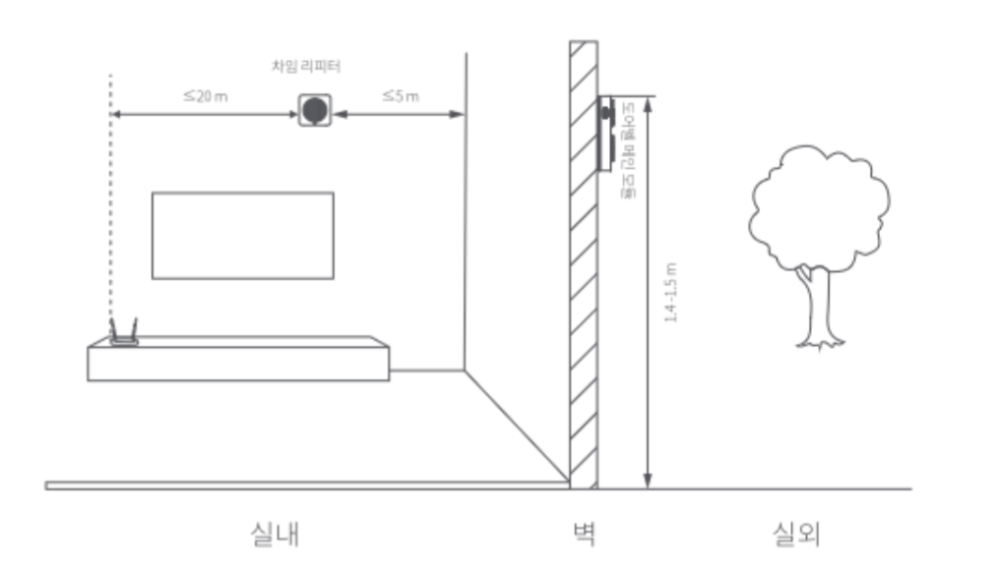
5.1.6.2 전원 공급 방법 선택
실외에 설치하는 도어벨 메인 모듈은 배터리 또는 외부 전원 공급 방식을 모두 지원하며, 설치 환경에 따라 적합한 방법을 선택하여 설치해 주세요.
5.1.6.2.1 배터리를 사용한 전원 공급
(1) 제품 패키지에 포함된 십자드라이버를 사용하여 후면판 클램프 나사를 푼 후, 도어벨 기본 모듈을 잡고 후면판을 밀어서 열어 주세요.
(2) 배터리 커버에 표시된 “+”와 “-”를 확인하여 올바른 방향으로 배터리를 장착해 주세요.(차임 리피터를 Aqara Home 앱에 먼저 등록한 뒤에 도어벨 메인 모듈에 배터리를 장착해 주세요.)
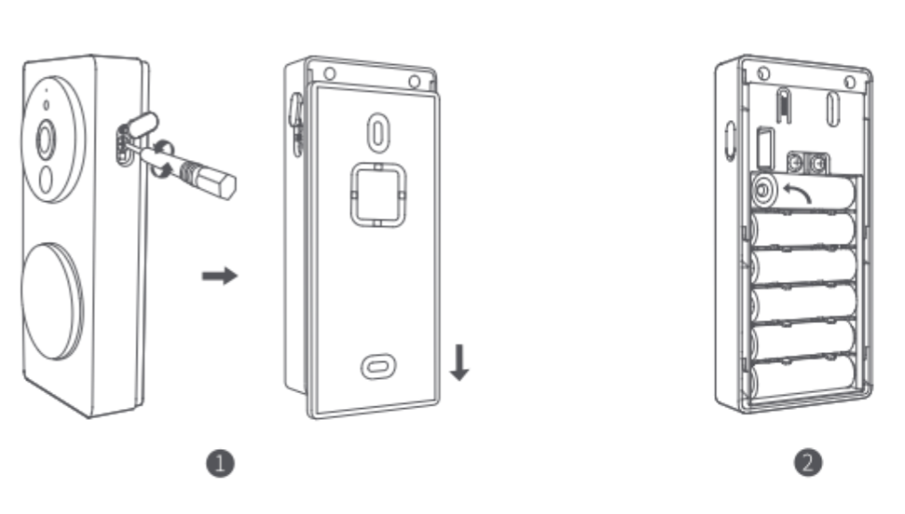
5.1.6.2.2 외부 전원 공급: 외부 전원 공급 장치를 사용하는 경우 후면판을 고정할 때 아래의 작업을 추가해 주세요.
(1) 공구를 사용하여 후면판의 배선용 구멍 덮개를 제거해 주세요.
(2) 전원 코드를 배선용 구멍에 삽입하여 통과시켜 주세요.
(3) 전원 코드를 도어벨 외부 전원 단자에 연결하고 전원 코드가 단락되지 않도록 나사를 단단히 조입니다.
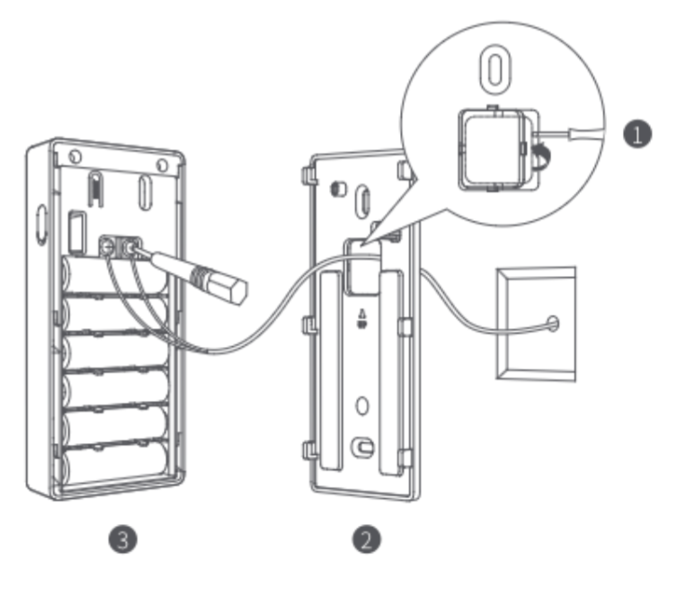
5.1.6.3 설치 방법 선택
5.1.6.3.1 실외 도어벨 기본 모둘 설치
도어벨 기본 모듈 설치 전에 후면판을 먼저 고정 시켜야 하며 아래와 같은 방법으로 고정할 수 있습니다.
방법1. 양면 테이프 사용
나무 문, 타일 벽과 같이 구멍을 뚫어서 설치하기 불편한 경우에는 양면 테이프로 고정하여 사용하실 있습니다.
(1) 도어벨 기본 모듈을 잘못 설치하는 경우 비디오 품질에 영향을 미칠 수 있기 때문에, 수평 및 수직 방향이 알맞게 설치되어 있는지 반드시 확인해 주세요.
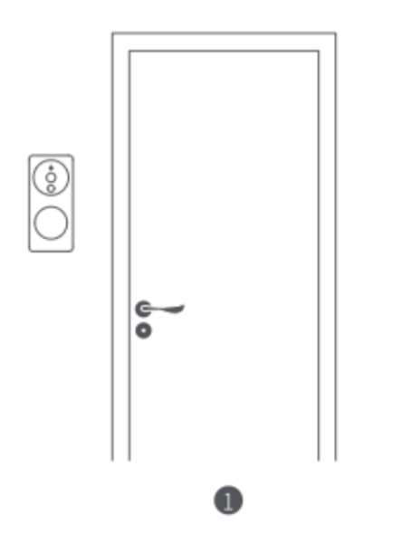
(2) 양면 테이프 보호 필림을 제거한 후 깨끗한 벽이나 문에 후면판을 붙여 주세요. 후면판이 떨어지지 않도록 전체를 잘 눌러서 고정해 주세요.
(3) 도어벨 기본 모듈이 후연판과 완전히 결합될 수 있도록 위에서 아래로 밀어 고정해 주세요.
(4) 십자드라이버를 사용하여 도어벨 메인 모듈 오른쪽에 있는 나사를 고정하고 실리콘 방수 커버를 고정해 주세요.
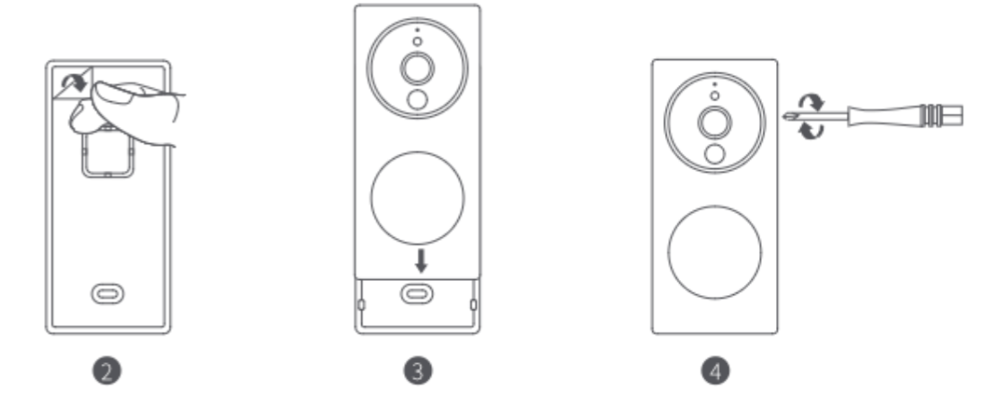
방법2. 나사 고정
(1) 벽면에 후면판을 밀착시킨 후 나사 구멍을 기준으로 타공할 위치를 표시해 주세요. 직경 6 mm의 드릴을 사용하여 벽볌에 구멍을 32mm이상으로 뚫어 주세요.
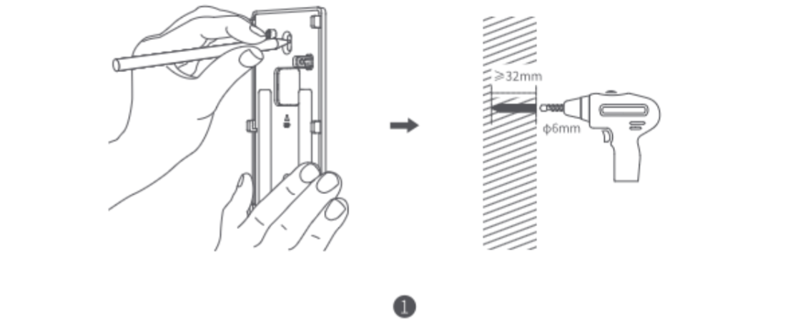
(2) 제품 패키지에 포함돤 칼브럭을 해머로 구멍 안으로 고정하고, 표면이 매끄러운지 확인해 주세요.
(3) 제품 패키지에 있는 셀프테핑 나사를 사용하여 브라킷을 벽에 고정합니다.
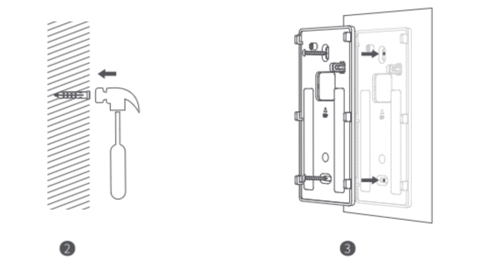
(4) 도어벨 기본 모듈이 완전히 고정될 때까지 후면판을 위에서 아래로 밀어 넣어 주세요.
(5) 십자드라이버를 사용하여 도어벨 기본 모듈 오른쪽에 있는 나사를 고정하고 실리콘 방수 커버를 고정
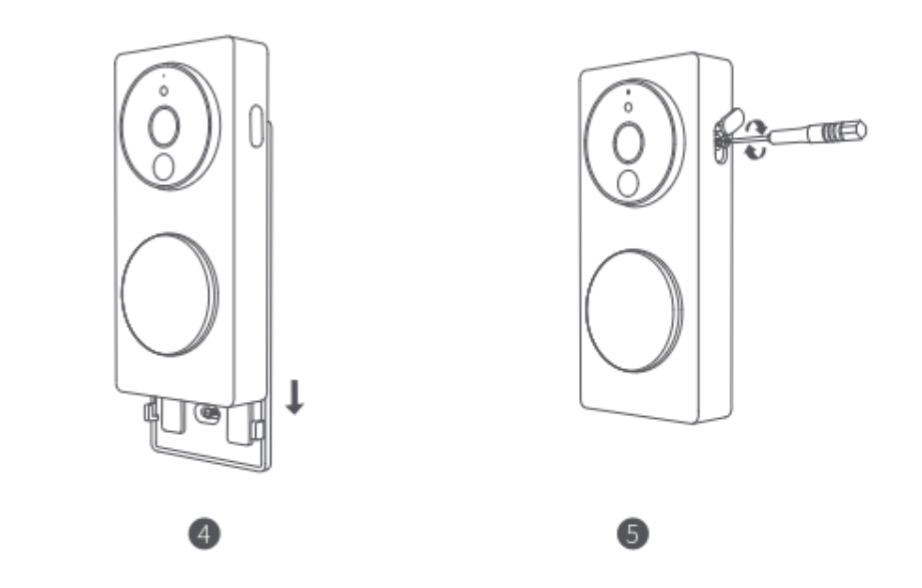
방법3. 20’ 브라킷 추가하기
도어벨을 출입문 옆면에 설치해야 하는 경우 20’ 브라킷을 추가로 설치하여 렌즈 방향을 조정할 수 있습니다.
(1) 나사를 사용하여 20’ 브라킷을 설치할 벽면에 고정시켜 주세요.
(2) 도어벨 후면판을 20’ 브라킷에 나사로 연결해 주세요.
(3) 설치 완료 후 도어벨 기본 모듈을 후면판에 결합시켜 주세요.
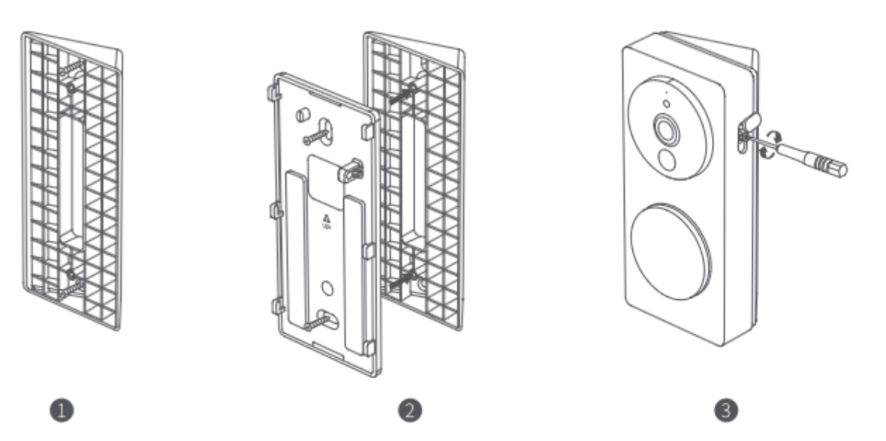
5.1.6.3.2 실내 차임 리피터 설치
실내 차임 리피터는 양면 테이프로 벽면에 고정하거나 원하는 장소에 올려두고 사용할 수 있습니다.
(1) 양면 테이프 보호 필름을 떼어낸 후 후면판을 깨끗한 벽이나 문에 붙여 주세요. 후면판이 떨어지지 않도록 전체를 잘 눌러서 고정시켜 주세요.
(2) Type-C 전원 코드를 장치에 연결해 주세요. LED 지시등이 정상적으로 켜져 있는 경우 장치가 정상적으로 동작하고 있음을 의미 합니다.
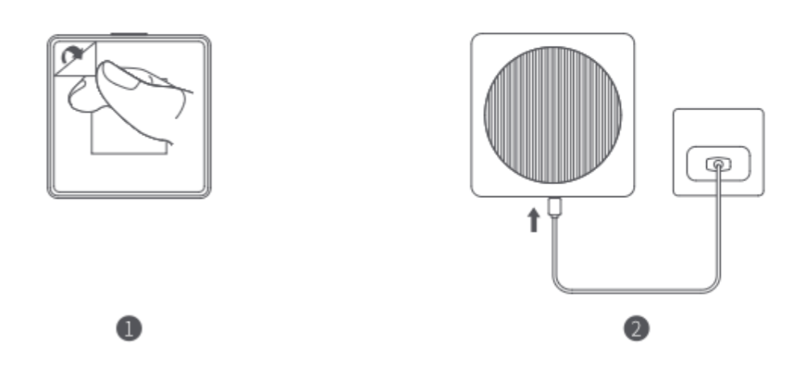
5.1.7 주의 사항
얌면 테이프로 장치를 고정하는 경우 설치하는 표면이 매끄럽고 깨끗한지를 반드시 확인해 주세요. 유리, 대리석, 라텍스 페인트 벽면, 세라믹 타일 등에 설치하는 것이 가장 좋습니다.
외부 전원 공급 장치를 통해 제품 내의 배터리를 충전할 수 없습니다. 배터리가 들어 있는 상태에서 장치를 외부 전원에 연결하는 경우 도어벨 메인 모듈은 외부 전원을 우선적으로 사용합니다.
직류 전원을 외부 전원으로 사용하는 경우 전원 단자는 양극과 음극을 구분하지 않으며 양 단자는 모두 양과 음극을 연결할 수 있습니다. 단자 사이에 단락이 없는지 확인해 주세요.
배터리로 전원을 공급하는 경우 도오벨 메인 모듈은 저전력 모드로 작동합니다. 외부에서 초인종을 누르거나 다른 트리거 조건이 없는 경우에는 자동으로 절전 모드로 전환됩니다. 도어벨 메인 모듈은 외부에 머무는 사람이 있거나 벨을 누르는 사람이 있을 때만 작동하며, 작동하는 빈도는 배터리 수명에 직접적인 영향을 줍니다. 외부 전원을 사용하는 경우는 도어벨이 절전 모드로 전환되지 않습니다.
배터리 수명을 보장하기 위해서는 LR6 AA 건전지를 사용하세요. 새로운 배터리와 기존에 사용하던 배터러를 함께 사용하는 경우 도어벨 기본 모듈의 작동 시간과 안정성에 큰 영향을 미칠 수 있습니다. 배터리 교체 시에는 모든 배터리를 새 배터리로 교체해 주세요.
배터리 함 내부의 나사에 부착된 변조 방지 라벨이 찢어지거나 손상되거나 파손될 경우 보증이 제공되지 않습니다.
G4의 메인 모듈은 함께 제공되는 차임벨 리피터와만 페어링할 수 있으며 그 반대의 경우도 마찬가지입니다. 하단의 HomeKit QR코드를 통해 확인하실 수 있습니다. 에프터 서비스에는 풀 셋트 반품이 필요합니다.
5.1.8 빠른 설치 방법
5.1.8.1 Aqara Home 앱 다운로드
Apple App Store, Google Play에서 ’Aqara Home’을 검색하거나 아래의 QR코드를 스캔하여 Aqara Home 앱을 다운로드해 주세요.
5.1.8.2 장치 전원 켜기
먼저 차임 리피터의 전원을 켜고, 차임 리피터를 앱에 추가한 후 도어벨 기본 모듈에 배터리를 장착해 주세요. 설치시 아래의 사항을 주의해 주세요.
도어벨 메인 모듈과 차임 리피터는 사전에 페어링이 되어 있어 다른 도어벨과 함께 사용할 수 없습니다.
차임 리피터를 네트워크에 연결하면 도어벨 기본 모듈이 자동으로 차임 리피터에 연결됩니다.
차임 리피터의 전원이 켜진 후 10분간 네트워크 연결이 되지 않으면 장치는 연결 중지 상태로 전환되어 흰색 지시등이 항상 켜져 있게 됩니다. 네트워크 접속을 다시 진행하려면 전원 공급 장치의 플러그를 뽑았다가 다시 꽂거나 버튼을 10초간 눌러 네트워크를 재 설정하세요. 지시등이 노란색으로 깜빡이면 네트워큰에 다시 액세스 할 수 있습니다.
5.1.8.3 도어벨 추가하기
5.1.8.3.1 Aqara Home 접속
스마트폰을 차임 리피터 가까이에 위치시킨 후, Aqara Home앱의 오른쪽 상단에 ’+’를 누르고, ’스마트 비디오 도어벨 G4’를 선택해 주세요. 앱의 안내에 따라 연결을 완료하면 차임 리피터의 지시등이 파란색으로 변경됩니다.
차임 리피터 연결에 실패하는 경우 아래의 문제들을 확인해 주세요.
차임 리피터는 2.4 GHz 대역의 Wi-Fi 네트워크만 지원하며 5 GHz 대역의 Wi-Fi는 지원하지 않습니다.
Wi-Fi 이름 또는 비밀번호에 지원되지 않는 특수문자가 포함되어 있어 연결할 수 없는 경우 네트워크 이름이나 비밀번호를 일반 문자로 변경한 후 다시 시도해 주세요.
공유기에서 Wi-Fi 무단 사용 방지 기능이 켜져 있어 네크워크에 정상적인 연결을 할 수 없는지 확인해 주세요.
5.1.8.3.2 Apple HomeKit에 추가하기
Aqara Home 앱의 오른쪽 상단에 있는 ‘+’를 눌러 ’장치 추가’ 페이지로 이동합니다. 차임 리피터 하단의 HomeKit 설정 QR코드를 스캔하거나 수동으로 숫자를 입력하여 장치를 HomeKit에 연결해 주세요.
자주 나타나는 HomeKit 추가 실패 메시지는 아래와 같습니다.
’액세서리 추가 실패’로 표시된 경우 반복적인 장치 추가 실패로 인해 iOS시스템 액세스하는 메시지 오류가 발생할 수 있습니다. iOS 장치를 재부팅하고 차임 리피터를 리셋한 다음 다시 시도해 주세요.
’액세서리가 이미 추가되어 있음’으로 표시된 경우 iOS장치를 재부팅하고 차임 리피터를 리셋한 후 HomeKit설정 코드를 수동으로 입력하여 도어벨을 추가하세요.
’액세서리 찾기 실패’로 표시된 경우 차임 리피터를 리셋하고, 약 3분 후 HomeKit 설정 코드를 수동으로 입력하여 다시 추가해 주세요.
5.1.8.4 기타 기능 사용하기
더 많은 기능을 사용하려면 Aqara Home앱을 사용하세요.
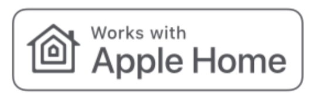
Works with Apple Home 인증 배지는 액세서리가 애플의 기술에 적용되도록 특별히 설게되었으며, 개발자의 인증을 받아 애플의 성능 표준을 충족한 것을 의미합니다. Apple은 이 기기의 작동이나 보안 및 규제기준에 책임을 지지 않습니다.
스마트 비디오 도어벨 G4는 10일간의 기록을 iCloud에 안전하게 저장하며 아이폰, 아이패드 또는 맥의 Apple Home앱에서 확인할 수 있습니다. 50GB 플랜에 카메라를 하나, 200GB 플랜에 카메라를 최대 5개 추가할 수 있으며 2TB 플랜에 카메라를 추가 비용없이 무제한으로 추가할 수 있습니다. 카메라 저장 기록은 iCloud 스토리지에 포함되지 않고 개별 저장됩니다.